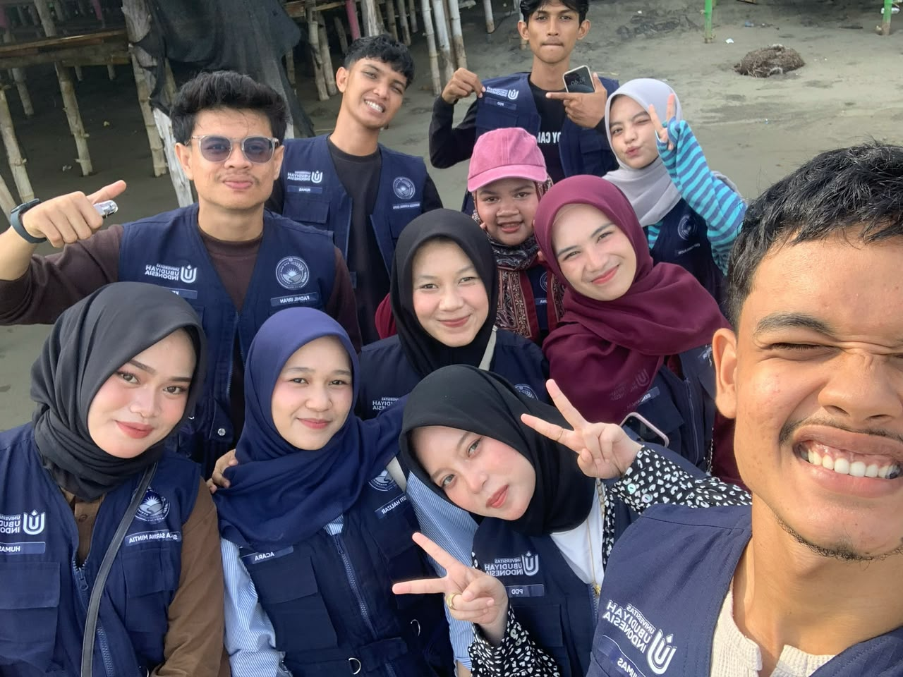

Sebuah Cerita Yang Tidak Ingin Kami Lupakan
Berawal dari 11 mahasiswa yang melangkah ragu ke pesisir Deah Teumanah, Trienggadeng, dan pulang membawa keluarga, tawa di beranda meunasah, serta ikatan persaudaraan yang kekal.
More Than Just KKN
“Kami datang untuk menjalankan sebuah program pengabdian. Tapi tanpa sadar, kami membawa pulang sesuatu yang jauh lebih berharga — persaudaraan, tawa di posko sederhana, dan tatap hangat warga Deah Teumanah di senja hari.”
Tiga puluh dua hari di Desa Deah Teumanah, Trienggadeng, bukanlah sekadar lembar pengesahan akademis atau sekumpulan laporan berkas tebal. Ini adalah tentang aroma tanah basah setelah gerimis pesisir, obrolan larut malam di beranda posko ditemani kopi saring hangat, senyum anak-anak yang belajar mengaji di meunasah, dan rasa canggung yang lambat laun luruh menjadi keluarga tak bersyarat.
Deah Teumanah, Trienggadeng, Pidie Jaya
19 Agustus – 19 September 2026

Laskar 11
Sudut penuh canda & senyum hangat
DOK. DEAH TEUMANAH • HARI KE-18Angka di Balik Cerita

“Di Deah Teumanah, kami tidak sekadar menuntaskan kewajiban universitas, melainkan belajar bagaimana menjadi manusia yang berakar di bumi tempat kami berpijak.”
11 Jiwa Laskar KKN 2026
Trienggadeng, Kabupaten Pidie Jaya